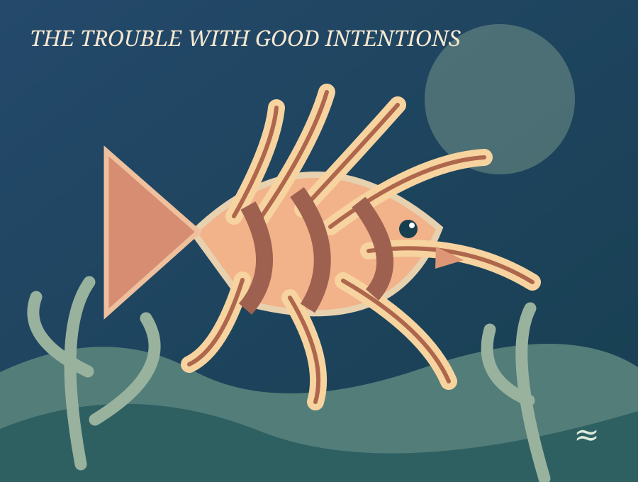
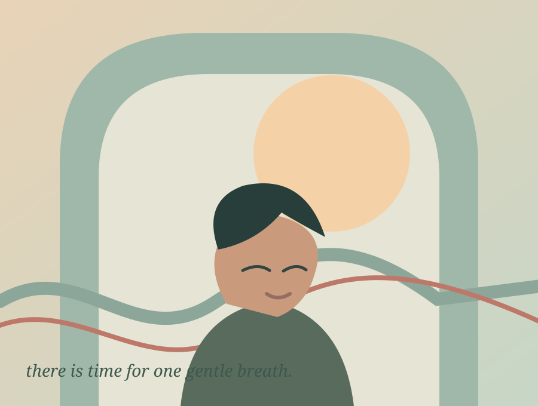
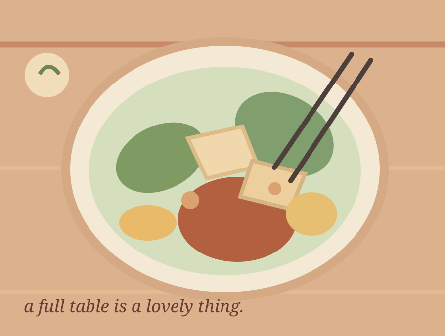

The breath that breathes you.
We spend so much of life trying to be in control. Yet every night, our bodies quietly remind us that not everything needs supervising.
Read the cover story
Worth a closer look.
A few stories about the ordinary things that turn out not to be ordinary at all.

Can eating a fish ever protect other fish?
An invasive lionfish, a documentary, and the difficult meeting between ecology and ahimsa.

Breathing Under Pressure
A thoughtful, evidence-informed guide to stress, focus, movement and the pause between feeling and responding.

Your Brain Has 27 Tabs Open
A tiny experiment in noticing what happens when your mind feels very, very busy.

Things we reach for, again and again.
Shin, Toomba and Alpro. Personal favourites are not proof, and a logo is not an ingredient check.
A five-minute tea ceremony for imperfect people.
Not a cure. Just a small ritual for paying attention.
Curiosity is a form of care.
A SMALL THOUGHT, NOT ANOTHER THING TO OPTIMISEWhen we pay attention, we begin to notice what our assumptions have been hiding. A person, a creature, a familiar street, a life unlike our own. There is so much more to meet than to master.
Read the essayFollow a good question.
Find a story by curiosity rather than by algorithm. Original stories and our new breathing collection, together.
9 stories to explore
The Breath That Breathes You
On the curious boundary between control and surrender, and what a single ordinary breath can teach us about being alive.
Breathing Under Pressure
A thoughtful, evidence-informed guide to stress, focus, movement and the pause between feeling and responding.
Your Brain Has 27 Tabs Open
A tiny experiment in noticing what happens when your mind feels very, very busy.
Can eating a fish ever protect other fish?
An invasive lionfish, a documentary, and the difficult meeting between ecology and ahimsa.
Before we say ‘vegan’, here's what we mean.
The official definition, our working philosophy, and why a label should follow understanding.
Things we reach for, again and again.
Shin, Toomba and Alpro. Personal favourites are not proof, and a logo is not an ingredient check.
How I'm building a tiny media company with AI.
An editor that proposes; an assistant that verifies; a human who still signs off.
A five-minute tea ceremony for imperfect people.
Not a cure. Just a small ritual for paying attention.
A game with no score, and three difficult futures.
Can a meaningful media experience make you question your own answer?
The little things we return to.
A note from Mikel and Huong, a shared pantry experiment, and a little pause. Read in English, Deutsch or Tiếng Việt in the existing edition.